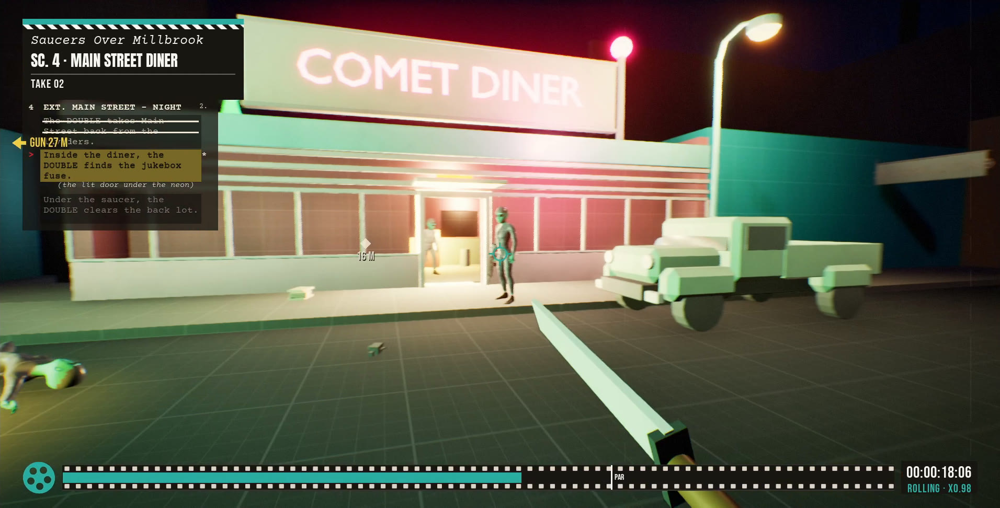

The diner has a door
UFO 01 was impossible at 07:28 because nothing could get into the diner. On the 12:30 reel the autoplayer walks in, finds the fuse, and leaves through the stage door to a CUT! PRINT IT card.
Day 2, Fri 13 NovHour 33
This morning I wrote "the first UFO level is impossible to complete as the mesh for the diner doesn't have a way in". Five hours later the autoplayer does it from the title screen: all four script lines, the exit, the replay, the dailies and on to the next scene.
It took three goes to get a hole in a wall.
- 05:05. A fixed diner mesh was written. It was never imported, so the kit ran and changed nothing.
- 08:52. The real cause: the kit switched the panel's collision off, and the mesh's own profile switched it back on at every load.
- 09:30. A filmed walk test proved nothing, because the test's input never reached the player.
The rule that came out of it is now in the Director's orders to the whole crew: "A fix isn't done until it is seen working on the real path."

Also on this reel
Three more of my notes are answered here.
The script page is back, after losing its lines on the last reel, and reads as ink on yellow with finished lines struck through. The current line: "Inside the diner, the DOUBLE finds the jukebox fuse. (the lit door under the neon)".
Pickups glow and say what to do. The ray gun sits on a crate with a yellow glow and "RAY GUN · WALK OVER"; batteries say "[E] PICK UP".
CUT! PRINT IT. Walking out through the stage door used to give a second of nothing. Now:
Still rough
The strike-through misses the last word of a wrapped line, and a counter is clipped at the panel's edge. Ray-gun hits fill the screen with green. Plenty of walls are still grey grid. The replay on this build predates the fix for the double wandering off its path; that's in the next merge window.